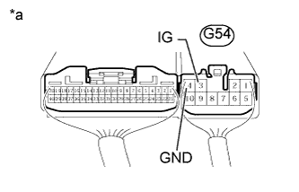
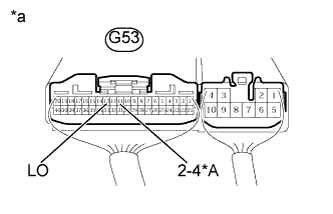
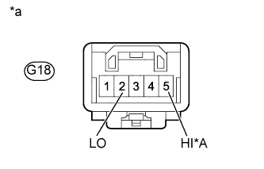

ПЕРЕКЛЮЧАТЕЛЬ ПОЛНОГО ПРИВОДА > ПРОВЕРКА БЕЗ СНЯТИЯ С АВТОМОБИЛЯ |
| 1. ПРОВЕРЬТЕ ПЕРЕКЛЮЧАТЕЛЬ ПОЛОЖЕНИЯ РАЗДАТОЧНОЙ КОРОБКИ |
Проверьте жгут проводов и разъем (ЭБУ полного привода – аккумуляторная батарея и масса).
|  |
Измерьте напряжение в соответствии со значениями, приведенными в таблице.
| Контакты для подключения диагностического прибора | Положение переключателя | Заданные условия |
| G54-3 (IG) - масса | Замок зажигания в положении ON (ВКЛ) | 11–14 В |
| *a | Устройство с подсоединенным жгутом проводов (ЭБУ полного привода) |
Измерьте сопротивление в соответствии со значениями, приведенными в таблице ниже.
| Контакты для подключения диагностического прибора | Состояние | Заданные условия |
| G54-4 (GND) - масса | Всегда | Менее 1 Ом |
Проверьте жгут проводов и разъем (переключатель положения раздаточной коробки – ЭБУ полного привода).
Отсоедините разъем G53 ЭБУ.
Отсоедините разъем выключателя G18.
Измерьте сопротивление в соответствии со значениями, приведенными в таблице ниже.
| Контакты для подключения диагностического прибора | Состояние | Заданные условия |
| G18-2 (LO) - G53-13 (LO) | Всегда | Менее 1 Ом |
| G18-2 (LO) - масса | Всегда | 100 кОм или более |
| G18-4 (GND) - масса | Всегда | Менее 1 Ом |
| Контакты для подключения диагностического прибора | Состояние | Заданные условия |
| G18-2 (LO) - G53-13 (LO) | Всегда | Менее 1 Ом |
| G18-2 (LO) - масса | Всегда | 100 кОм или более |
| G18-4 (GND) - масса | Всегда | Менее 1 Ом |
| G18-5 (HI) - G53-11 (2-4) | Всегда | Менее 1 Ом |
| G18-5 (HI) - масса | Всегда | 100 кОм или более |
| *A | для моделей с 2TR-FE, 5L-E | - | - |
| *a | Вид спереди разъема со стороны жгута проводов: (к переключателю положения раздаточной коробки) | *b | Вид спереди разъема со стороны жгута проводов: (к ЭБУ полного привода) |
Проверьте переключатель положения раздаточной коробки.
Выключите зажигание.
Подсоедините разъем G18 переключателя.
Подключите разъем G53 ЭБУ.
|  |
Измерьте напряжение в соответствии со значениями, приведенными в таблице.
| Контакты для подключения диагностического прибора | Положение переключателя | Заданные условия |
| G53-13 (LO) - масса | Замок зажигания в положении ON (ВКЛ) Переключатель положения раздаточной коробки в положении H4 | 10,5-14 В |
| Замок зажигания в положении ON (ВКЛ) Переключатель положения раздаточной коробки в положении L4 | Менее 1,5 В |
| Контакты для подключения диагностического прибора | Положение переключателя | Заданные условия |
| G53-11 (2-4) - масса | Замок зажигания в положении ON (ВКЛ) Переключатель положения раздаточной коробки в положении H4F | Менее 1,5 В |
| Замок зажигания в положении ON (ВКЛ) Переключатель положения раздаточной коробки в положении H4L | Менее 1,5 В | |
| Замок зажигания в положении ON (ВКЛ) Переключатель положения раздаточной коробки в положении L4L | 10,5-14 В | |
| G53-13 (LO) - масса | Замок зажигания в положении ON (ВКЛ) Переключатель положения раздаточной коробки в положении H4F | 10,5-14 В |
| Замок зажигания в положении ON (ВКЛ) Переключатель положения раздаточной коробки в положении H4L | Менее 1,5 В | |
| Замок зажигания в положении ON (ВКЛ) Переключатель положения раздаточной коробки в положении L4L | Менее 1,5 В |
| *A | для моделей с 2TR-FE, 5L-E |
| *a | Устройство с подсоединенным жгутом проводов (ЭБУ полного привода) |
Проверьте ЭБУ полного привода.
Отсоедините разъем выключателя G18.
|  |
Измерьте напряжение в соответствии со значениями, приведенными в таблице.
| Контакты для подключения диагностического прибора | Положение переключателя | Заданные условия |
| G18-2 (LO) - масса | Замок зажигания в положении ON (ВКЛ) | 10,5-14 В |
| Контакты для подключения диагностического прибора | Положение переключателя | Заданные условия |
| G18-2 (LO) - масса | Замок зажигания в положении ON (ВКЛ) | 10,5-14 В |
| G18-5 (HI) - масса | Замок зажигания в положении ON (ВКЛ) | 10,5-14 В |
| *A | для моделей с 2TR-FE, 5L-E |
| *a | Вид спереди разъема со стороны жгута проводов: (к переключателю положения раздаточной коробки) |